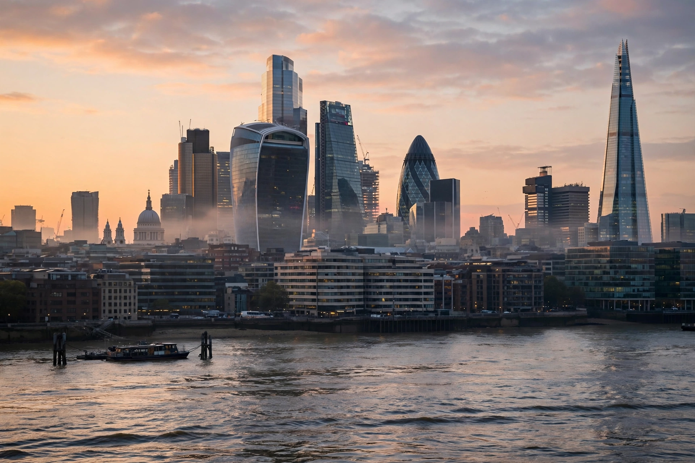

Top stories
Global business and markets lead the FT

The FT's homepage — set against the paper's signature salmon pink — leads with markets, companies and the world economy, with Lex, Alphaville and its columnists prominent, behind a subscription paywall.
Markets
Equities, bonds, currencies and commodities
The FT's market coverage and data are core products.
Companies
Deals, results and corporate strategy
Company news by sector.
World
Geopolitics for the boardroom reader
International news with an economic frame.
Opinion
Columnists and the FT editorial line
Home to prominent economics and politics columnists.